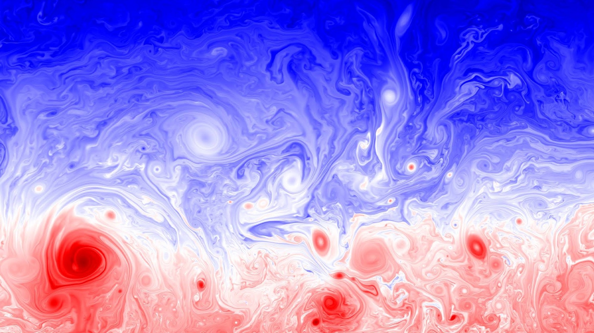
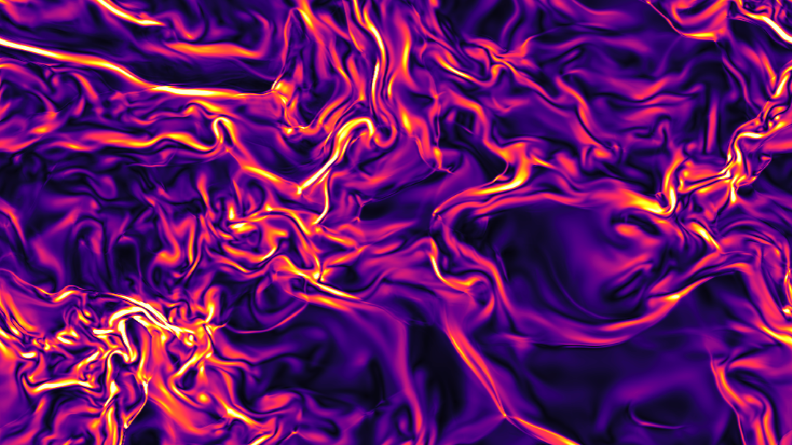
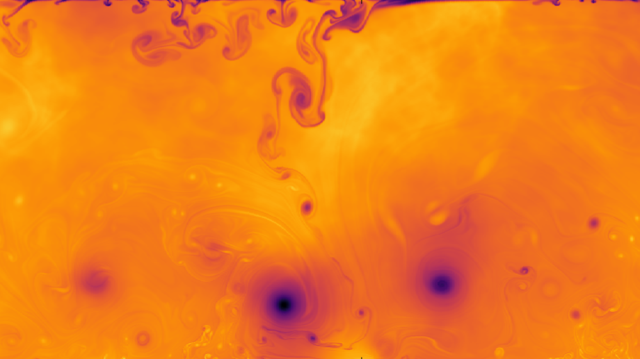
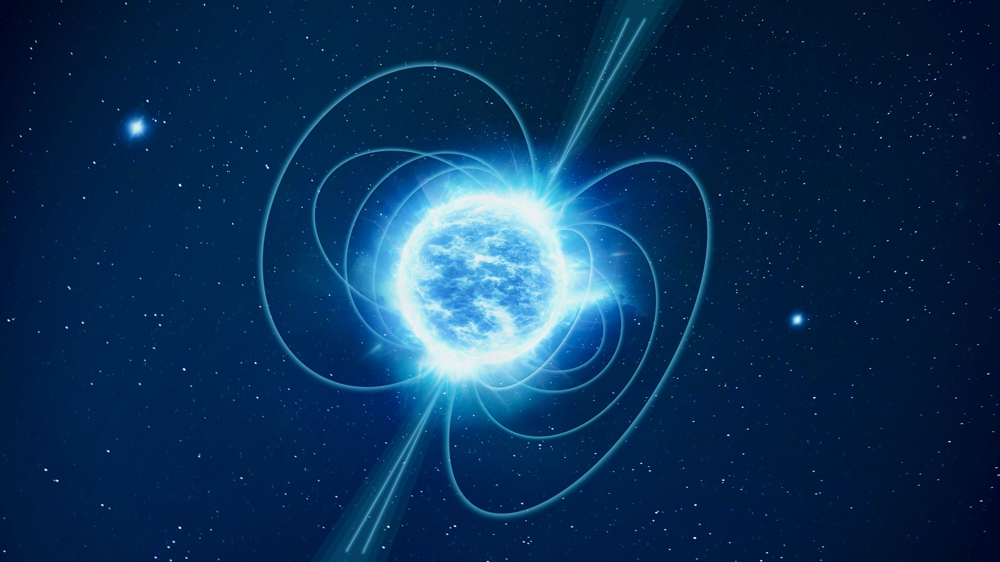

Modeling Earth’s atmosphere using numerical simulations
Currently, we are simulating moist convection with Earth-like parameters,
including rotation, to better understand atmospheric dynamics.
These high-resolution simulations aim to capture the complex interplay
of turbulence, convection, and large-scale circulation.

Supersonic turbulence
We perform direct numerical simulations of supersonic turbulence
using GPU-accelerated DHARA and high-order TENO scheme.
Our focus is on multiscale energy transfers, shock–turbulence interactions,
and their role in astrophysical and high-speed flow environments.

Fully-compressible convection in turbulent regime
We investigates compressible turbulent convection
at extreme Rayleigh numbers. These studies reveal classical
heat-transport scaling laws and provide insights into highly
nonlinear regimes relevant to both astrophysics and geophysical flows.

Renormaliztion of Navier-Stokes equation
We coarse-grain the Navier–Stokes equations shell by shell in Fourier space.
Using a first-order Green’s function, we obtain a scale-dependent renormalized
viscosity, which converges across shells to give the effective inertial-range transport.

Magnetic field evolution in neutron stars
We study the structure and key processes in neutron stars, focusing on
magnetic field dynamics such as Ohmic dissipation and Hall drift. The
formalism of electron magnetohydrodynamics (EMHD) is applied to model
the crust.
Theoretical modelling of accretion disk oscillations
We study the dynamics and trapping of acoustic oscillations in thin accretion
disks, focusing on their behavior near rotating black holes and related
astrophysical effects.